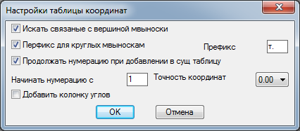
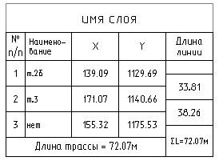

Команда: draw_table_coord_trassy_to_offset
Команда: draw_table_coord_trassy_to_offsetЧертит таблицу с координатами трассы
При построении формируется объект таблица куда заносятся данные о полилинии.
Все вершины нумеруются с начала до конца, каждой вершине полилинии соответствует пункт таблицы. Если таблица будет продолжена нумерация получится сквозная. Если на вершину определяемой полилинии есть мультивыноска ее текст будет внесен в графу Наименование таблицы. Если "голова" мультивыноски оформлена в виде блока (текст в круге, квадрате и тп) в начале строки наименования будет добавлено "т." потому как так обычно оформляются точки проекта. Если с какой то вершине не соответствует ни одной мультивыноски она будет создана при чем в ее текстовая часть будет соответствовать номеру вершины по порядку, а в поле наименование будет внесено "нет". В название таблицы помещается имя слоя в котором лежит выбранная полилиния.
Команда: draw_table_coord_trassy_to_offset
 Выбери полилинию трассы:
Выбери полилинию трассы:
 указывает объект типа двумерная полилиния.
указывает объект типа двумерная полилиния.
Укажи точку вставки таблицы координат [Добавить к старой/Настройка/Выход]:
указывает точку для вставки таблицы или выбирает пункт Добавить
Выбери существующую таблицу с координатами:
указывает объект типа таблица
Если выбрать пункт Настройки получаем диалоговое окно:
Искать связанные с вершиной мвыноски - можно посоветовать снимать эту галочку при очень загруженом мультивыносками чертеже, при поиске программа каждый раз их все перебирает. Иногда в некоторых чертежах попадаются глючные мультивыноски из за которых программа вылетает с ошибкой - отключаем эту галочку все заработало.
Префикс для круглых мвыносок - теперь можно выбрать что добавлять перед содержимым круглых мультивыносок.
Продолжить нумерацию при добавлении в сущ. таблицу - все просто если убрать галочку нумерация всегда будет начинаться с
Начинать нумерацию с - номер первой строчки при создании таблицы. Имеет место быть неприянтый факт каждая последующая строчка в таблицу добавляется дольше чем предидущая. На уровне 20-30 точек это почти не заметно, но после 70-80 начинает бросаться в глаза. Пока я не знаю как это вылечить, но как вариант разбить большую таблицу на несколько меньших. Чтобы нумерация была сквозной добавлено это поле. Не всегда удобно, но не всем хватит терпения ждать добавления строки по несколько секунд.
Точность координат - добавил когда выяснилось, что некоторым надо поточнее.
Добавить колонку углов - добавляется дополнительная колонка с углами поворота полилинии. Точнее углов отклонения от прямой направление отклонения обозначается буквой "Л" или "П" т.е. в лево и право соответственно. По умолчанию колонка отключена.
Пример построеной таблицы.
